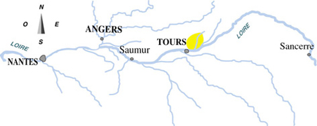

- Qu'est-ce que vous regardez ? C'est la carte routière ?
- Non ! C'est la carte des vins. C'est pour éviter les bouchons !
- Fernand Reynaud Raymond Devos
Friand et plaisant ou structuré et puissant : deux
personnalités de Bourgueil pour exprimer dans votre verre ses deux
grands terroirs. Rabelais disait à son sujet, dans Gargantua, “Beuvez
tousjours, vous ne mourrez jamais
Localisation
L'aire d'appellation s'étend sur 7 communes. A cet
endroit, la vallée de la Loire est composée de sols variés, depuis les
alluvions près du fleuve jusqu'aux sols argilo- calcaires proches de
la côte de
tuffeau
Superficie : 1 400 ha
Chinon
Capitale de la Rabelaisie et du tourisme
Bachique , Chinon fête ses grands vins rouges
tout en faisant tinter ses verres de rosé et de blanc.
Localisation
L'aire d'appellation s'étend sur 19 communes, de part
et d'autre de la Vienne jusqu'à sa confluence avec la Loire.
Superficie : 2 300 ha
Vouvray
Secs, tendres, mœlleux ou Fines bulles, les blancs de Vouvray vous
révèlent leur exceptionnelle diversité.
Localisation
L'aire d'appellation s'ouvre aux limites Est de l'agglomération
tourangelle et s'étend sur 7 commune de la rive droite
de la Loire et en bordure de son affluent, la Brenne.
